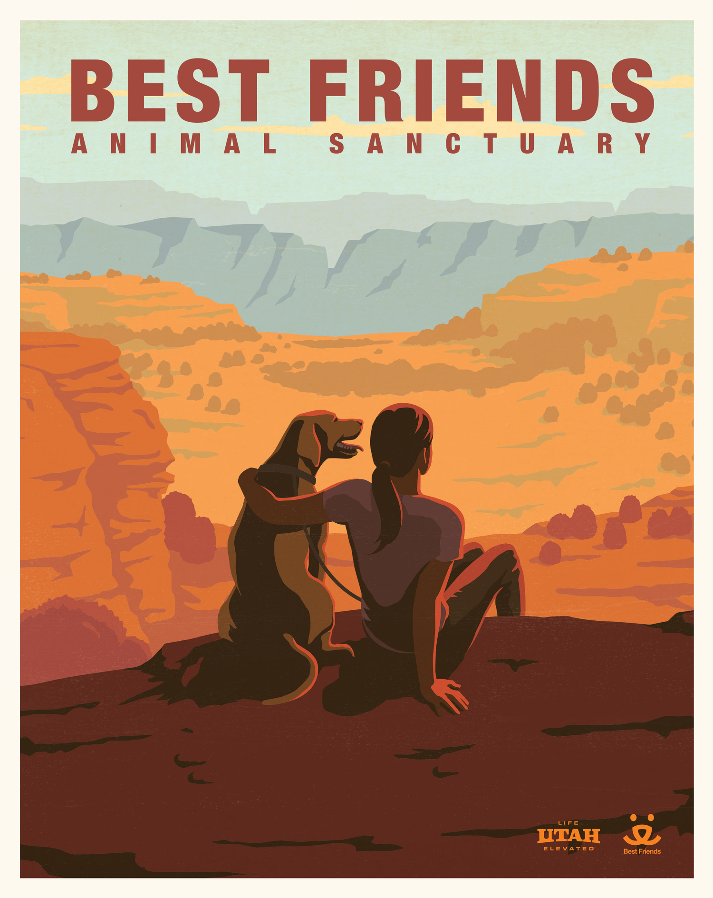
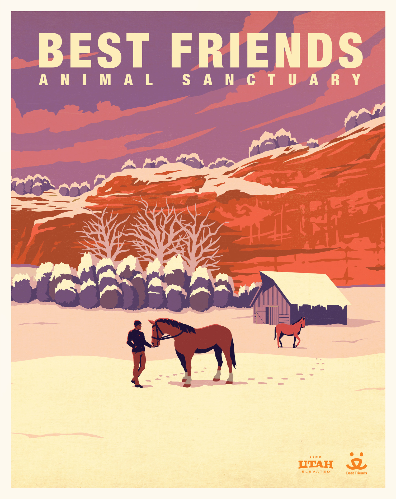
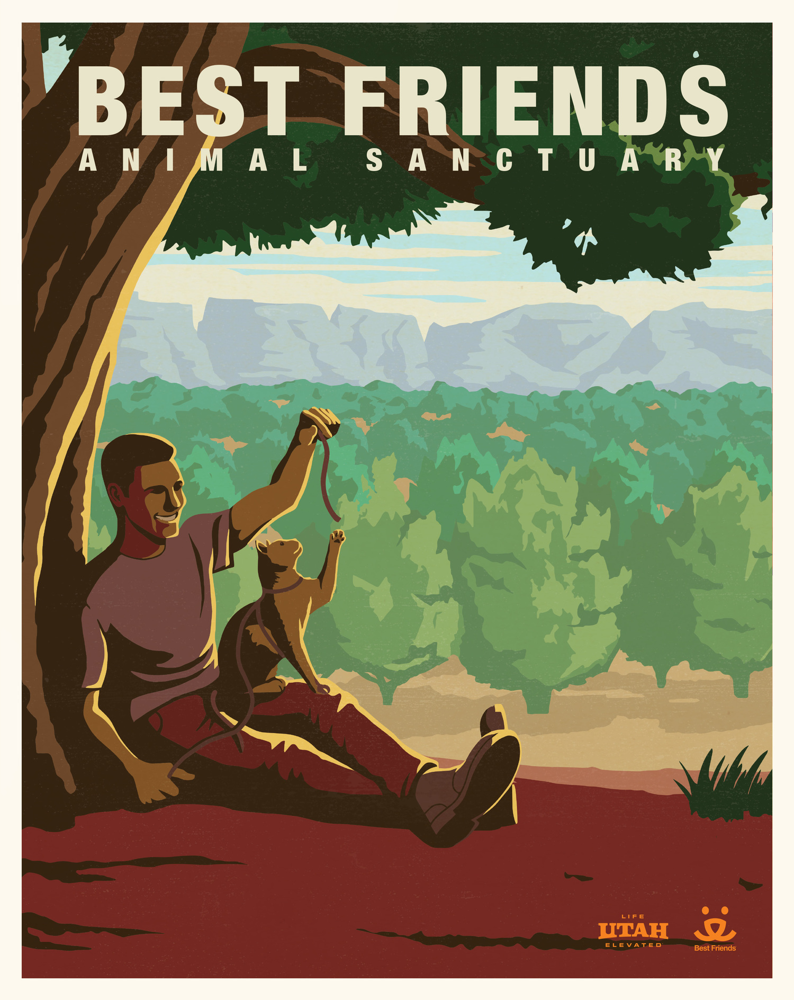
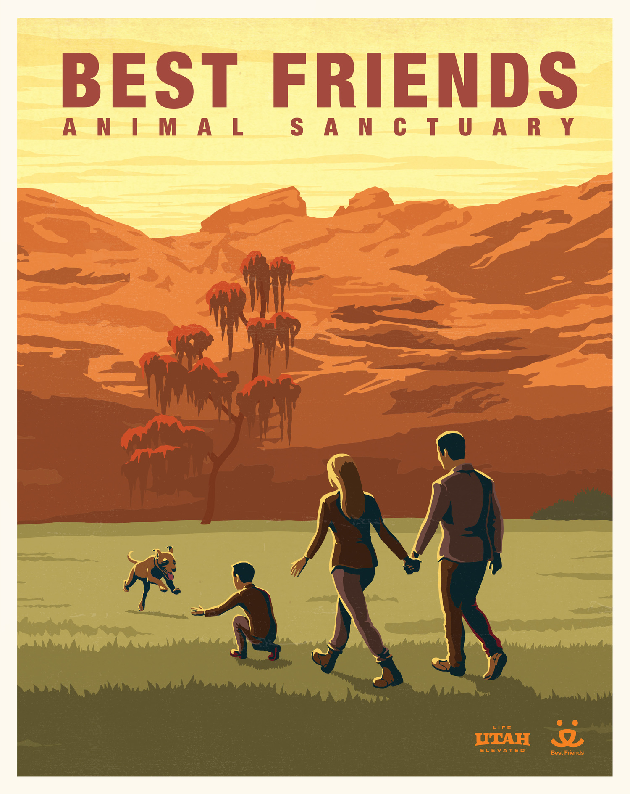
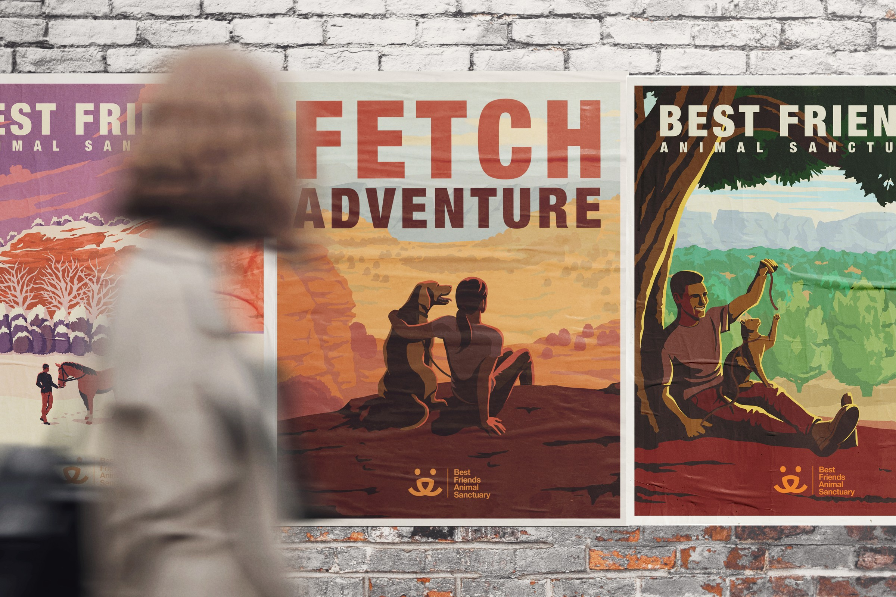
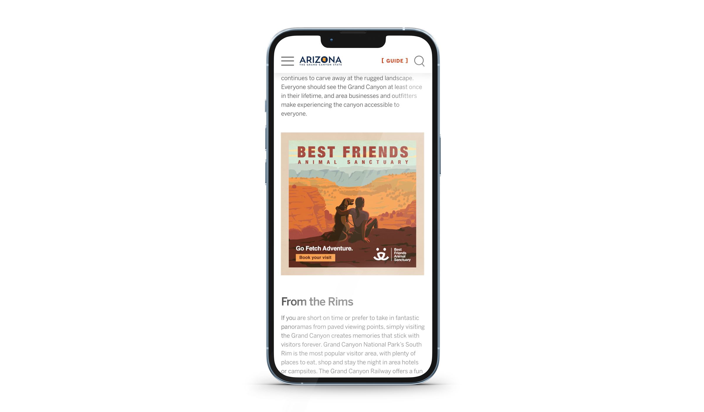
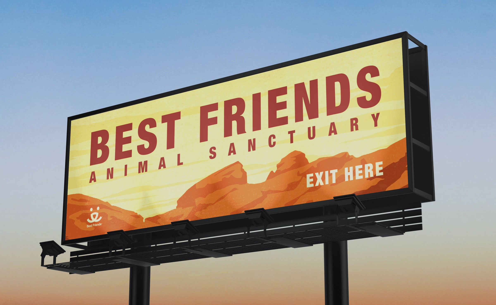

GO FETCH ADVENTURE
The Best Friends Animal Sanctuary isn’t a shelter—it’s a sprawling haven for hundreds of companion animals.
It’s also not just a roadside diversion. They share a backyard with icons: The Grand Canyon, Bryce Canyon, Zion…
The brief said to create a campaign that would showcase the sanctuary as a vacation destination, so we designed a series of classic travel posters and positioned ourselves alongside the neighboring national parks.
- Role: Art director
- Copywriter: Drew Shields






